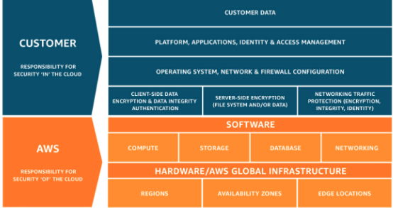

Resumo AWS Cloud Practioner
Tipos Nuvem
Packaged Software DataCenters antigos, onde nós mesmos somos o responsável por tudo, desde a parte física até os hardwares. Antigos DataCenters.
InfraAsService É basicamente quando nós alugamos a parte física da nuvem. Ela fica responsável pela parte física, nós ficamos responsáveis por toda a configuração.
PlatformAsService Aqui nós só precisamos nos preocupar com nossa aplicacao e com os dados dela. De resto a nuvem controla tudo.
SoftwareAsService Estágio mais alto de software em nuvem, onde básicamente só precisamos utilizar. (gmail um exemplo). A nuvem controal tudo.
Nuvem Pública Nuvem que qualquer pessoa pode entrar em seus serviços via internet e contratar o serviço que mais lhe agrade. São compartilhados entre seus datacenters.
Nuvem Privada É quando você precisa de um Datacenter único e exclusivo para voce e para sua empresa. Obviamente pagará a mais por isso. Geralmente utilizado por Bancos, Governos.
Nuvem Híbrida É o meio termo dos dois mundos, Quando por exemplo podemos colocar informacoes sensíveis na privada, e as demais na publica.
I A M
Iam Gerenciador de identidade da Amazon, permite gerenciar segurança e recursos aos serviços da AWS. Permite o controle do acesso das contas, quais ações. É fundamental para a segurança da nossa conta Cloud.
Usuários: Representam pessoas ou sistemas que interagem com a AWS
Grupos: Permitem agrupar usuários com permissões semelhantes. Ao invés de darmos permissões pessoas por pessoa, criamos um grupo e concedemos ao grupo. Quando quisermos outro user com a mesma auth, basta adicionar ao grupo.
Funções:Cocnede permissões temporárias a entidades confiáveis como aplicativos ou servços. Também conhecida como ROLES.
Política Acesso: É o que define em si o que pode ou o que nao pode ser acessado.
MFA: É adicionar mais um fator a sua conta, nao qual além da senha pede um código de um dispositivo que escolhemos.
Auditoria e Monitoramento: O IAM permite o rastreamento de toads as atividades relacionadas a seguranca de sua conta.
AWS Organizations: Recurso da AWS que permite que voce crie várias contas a partir da sua conta. De forma que quando sua empresa ficar "grande", podemos dividir em várias sub empresas para cada filial, de forma que o faturamento fique todo em apenas um só local.
IAM Identity Center É o antigo SingleSignOn que permite que a AWS sincronize com softwares de terceiros(Email,Recursos,Aplicacoes).
Políticas de Senhas: Senhas robustas com diversos requisitos.
AWS CloudShell Ambiente de linha de comando baseado em navegador, na qual precisamos estar logado dentro de nossa conta para que possamos acessar todos os recursos da aws a partir de linha de comando em uma máquina virtual da própria AWS.
CLI Outra forma de acessar a AWS através de comandLine, porém não integrado a AWS. precisamos realizar download de algumas coisas, e configurar as chaves de acesso.
AWS AccessKey Combinação de duas chaves (Private/Acces) que inserimos na aplicacao ou na comandline para que possamos acessar os recurssos e serviços da AWS.
AWS Sdk Kit que permite a integracao de nosso software com os servicos AWS.
Infraestrutura Global
Infra: As regioes da AWS são áreas geográficas nas quais a AWS tem dataCenters. Cada regiao é completamente independente das outras, com sua própria infraestrutura física e elétrica.
Aws Region: É uma grande área física onde a AWS opera. ( Topo da Cadeia.)
Zona de Disponibilidade (AZ`s): Dentro de cada região, temos várias zonas de disopnibilidade, que são os grandiosos dataCenters físicos da AWS. Cada AZ fica em um local dentro da regãao, porém são altamente conectados. AZ'S permitem a disponibilidade e recuperação de desastres.
Zonas Locais: Zonas projetadas para fornecer baixa latencia e alto desempenho para aplicativos que exigem proximadade física com seus usuários.
WaveLenght: Serviço de computacao e armazenamento em redes 5g. Fornece infra de borda móvel de latencia ultrabaixa. Baixa latencia, Alta escalabilidade.
Outspots: Família de solução que fornecem infraestrutra e servicos da AWS para uma experiencia híbrida consistente.
Responsábilidade Compartilhada:
ResponsábilidadeCompartilhada: Em resumo é de responsabilidade da aws cuidar de toda a parte de hardware, Compute, Storage, Database, Networking. Todo o resto passa a ser de responsábilidade do cliente.
Elastic Cloud Computing - EC2
EC2 Talvez o principal serviço da AWS. Aqui é onde criamos uma máquina virtual, subimos uma máquina virtual, tudo isso é a famosa EC2. Existem vários tipos de EC2., porém para esse exame não é necessário decorarmos qual tipo de máquina é para qual coisa, e seus valores. Precisamos apenas saber que existem diversos tipos.
Uso Geral: Equilibrio entre recursos. Linha M7, MA, M6....
Otimizado Comp: São da família c7, c5....
Otimizado para Memória: São da família R..
Modelos e Precos:
Sob Demanda: É quando simplesmente subimos a EC2 e vamos pagando de acordo com o uso. Não há contrato, não há acordo.
Spot: Até 90% de desconto. Porém a aws a aloca em máquinas que ela pode "tirar" a qualquer momento.
Hosts Dedicados: É a nuvem privada. É quando pegamos um servidor da aws inteiro para nós.
Capacidade por Demanda: É quando temos uma data definida. Por exemplo: Precisaremos da máquina X, c/ tais configuracoes, do dia 10 ao dia 20.
Saving Plans: É quando fazemos um contrato com a AWS para que abaixe o valor da sob demanda, e deixamos acordado que usaremos o servico por 1 a 3 anos.
EBS - Elastic Block Store
EBS É o serviço de armazenamento das nossas EC2. A Aws possui o hack de máquinas virtuais, e o hack de disco. Um EBS está "atrelado" a uma EC2. Um EBS só pode estar atrelado a UMA instancia de EC2.
HDD Mais memória e menos velocidade.
SSD Menos memória e mais velocidade.
SnapShots É uma espécie de um backup. Ele irá tirar uma foto do disco. Não é pago para o servico de snapshot em si. Porém é pago pelo espaço que o snapshot está utilizando. Pode ser configurado rotinas, como uma vez por semana, todos os dias, de acordo como quiser.
AMI É uma cópia da "Imagem" da máquina para que possa ser reutilizada futuramente. Por exemplo: Criamos uma EC2, instalamos tudo, configuramos. Se acharmos que for necessário futuramente termos outra máquina igual, podemos utilizar a AMI.
Snap x AMI O Snap acaba funcionando como um Backup e já a AMI é salvar a máquina.
EFS Armazenamento em disco que toads as VM's da nossa organizacao conseguem localizar e acessar esse EFS. Se criarmos um arquivo em uma máquina, todas as demais irão ver.
EFX É a mesma coisa que EFX porém para máquinas Windows.
EFX Lustre Mesma coisas das de cima, porém para máquina de hiper alto poder.
Escalabilidae EC2
Disponibilidade: Estamos falando de nossa aplicacao estar sempre disponível Para isso, mesmo que um servidor caia, tem uma réplica em outro. (Zonas de Disponibilidae).
Escalabilidade: Podem ser Horizontal ou Vertical. Vertical é qual melhoramos os recursos de um servidor colocando mais recursos como mais ram, mais memória, mais tudo. Já a Horizontal, é quando aumentamos o número de máquinas.
Elasticidade: É justamente o fator que permite que nossos servidores cresçam horizontal, se esticando, e voltando ao normal quando necessário.
AutoScaling: É justamente ao pé da letra o fato de se auto escalar. O fato de esticar horizontalmente.
LoadBalance: Está sempre junto do autoScaling, pois é ele que irá gerenciar os acessos aos seus servidores. A requisicao chega nele, e ele mapeia para qual ec2 deve ser encaminhada.
S3 - Simple Storage Service
S3 Talvez o segundo serviço mais utilizado da Amazon, serviço onde armazenamos Objetos em nossas Buckets. É ilimitado, paga pela quantidade em uso. Precisa ter um nome único. Cria um endereço na WEB que pode ser público ou privado. Existem tipos de bucket S3. Para esse exame não precisa ir muito a dentro, basta saber por alto.
Standard: É o normal da AWS. Armazenado e pronto para uso.
Intelligent Tieing: Consegue monitorar os arquivos utilizados e não utilizados, poendo alterar sua categoria de acordo com o uso.
Glacier: Muito barato, porém quando precisarmos acessar, precisamos avisar previamente a AWS, pois ela só irá retornar o arquivo em algumas horas, e se mesmo assim quisermos, teremos que pagar uma "quebra de contrato".
Versionamento: Pode ou nao ser habilitado. É uma forma de a cada mudanca que realizarmos em agum arquivo, será salvo uma nova cópia. O antigo fica de versionamento e o atual passa para prçduãao. Todos ocupam espaço, pagamos por eçpaco total.
Criptografia: Todo arquivo que jogamos para dentro do S3 ele automáticamente é encriptografado pela AWS (ServerSideEncryption) que é a forma indicada por eles mesmo de criptografia. Porém é possível que um cliente nao confie ou por qualquer motivo prefira fazzer a criptografia. Isso é chamado de Client Side Encryption.
Storage Gateway Servic1o utilizado para copiar dados de um servidor físico para dentro da AWS. O storage Gateway pode ser uma máquina virtual, como também pode ser um dispositivo físico que a aws envia para voce, voce pluga no seu datacenter, copia, e em seguida envia para eles de volta para que eles subam para dentro de sua S3.
SnowFamilly: Aqui é quando precisamos transportar GRANDES quantidades de dados para a AWS. para isso ela pode enviar tres tipos de recursos: SnowCone (menos quantidade - 8tb), SnowBall (quantidade média - 80tb), SnowMobile que é literalmente um caminhão para dados gigantescos.(100PB)
Banco de Dados:
DataBases: Podem ser de estruturas relacionais ou nao relacionais.
Aws Rds: Relational DataBase System , é o sistemas de banco relacionais da AWS, que tem os principais: Aurora, Mysql, Oracle, Postgres, MariaDB, SQLServer. O aurora é o prórpio da AWS que obviamente é o que ela tenta "empurrar" para que utilize.
Elastic Cache: É um sistema de resposta em memória, que sempre vai ser muito mais rápido do que seu rds mesmo ele sendo em um ultra SSD de ebs. Como funciona? O ElasticCache salva algumas requisicoes do banco de dados, em memória. Por exemplo: Um mega desconto no Carro X. Provavelmente o bacno receberá milhares de requisicoes para esse carro. O elastic cache salva essa informacao, e apenas o primeiro vai ter que ir até o banco, todos os demais outros serão respondidos pelo ElasticCache.
DynamoDB Serviço NOSQL, que está disponível em 03 zonas de disponibilidade e 100% Servless.
Glue: responsável pelo ETL: Extrair, Transformar e Carregar. Muito utilizado para trabalahr com dados analíticos, de forma que irá lhe mostrar de forma "legível"ou "amigável".
Neptune Muito utilizado por redes sociais que exigem grandes quantidades de links entre elas. (Junção de Links).
Redes VPC
VPC'S: Premissa do conhecimento Cloud. Aqui é onde comçamos a entender como esses servicos vistos se comunicam. Onde temos os Ip's , subnets. Por padrão a AWS já nos cria uma VPC default dentro de uma Região. Por padrão ela é isolada da internet e possui suas subredes. Servidores dentro de uma mesma VPC conseguem se comunicar entre si, caso estejam em vpc's diferentes, não se comunicam.
Nacl: Network Access Control List- Protege a subnet através de um conjunto de regras que permite ou nega o acesso. Cria uma lista de acesso e bloqueia também. Le de cima para baixo, dando match para de ler.
VPC Pearling: É a forma que permite com que uma VPC se comunique com outra VPC.
AWS Transit Gateway: Quando em nossa conta AWS temos muitas VPC'S e queremos conectar todoas elas, fazemos isso através do TransitGateway.
VPC EndPoints: É o fráfego para serviços passarem por dentro da infra da AWS ao invés de passarem pelo mundo externo Internet. Para o S3 & DYNAMODB é chamado de Gateway, e para todos os demais são chamados de Interface.
VPN & VPN Site To Site VPN é quando temos um usuário de home office por exemplo, e ele quer se conectar com os servicos da aws de uma empresa. Ele faz isso através da VPN. Já a vpn Site to Site É quando queremos estabelecer uma coãexao da nossa empresa e todos seus funcionários tenham acesso a nossa cloud da AWS.
Private Link: Serve para conectar as conta.
Direct Connect: É como o próprio nome já diz, quando queremos conectar nossa empresa 100% dedicada a aws, feita de forma física e direta. (Cabeamento). Mas e a vpn site to site ? ou a vpn Normal ? o problema dessas solucoes é que elas dependen da internet.
VPC Flow Logs Monitoramento de todos os logs, erros, que acontecem dentro de suas subredes.
Internet Gateway: Portão que permite a conexão de sua VPC com o mundo externo (internet).
Route53
Route53: É o serviço de DNS da internet que pode atuar da forma simples (Realiza a traducao de URL para IP), mas que também possuem vários tipos de políticas (Não contemplados nessa prova).
CloudFront - CDN: É basicamente quando o usuário Precisa acessar com baixa latencia e alta velocidade.. Ele trabalha com cash, que acelera a entrega de servicos. Rever
AWS Global Acelerator: Servico que melhora a disponibilidade e desempenho de suas aplicacoes para usuário em todo o mundo. Ele faz isso redirecionando o tráfego de usuários para aplicacoes mais próximas c menos latencia.
AWS Transfer Acceleration: Recurso da Amazon S3 que permite a transferencia rápida e segura de arquivos por longa distancias entre um cliente e um bucket do S3.